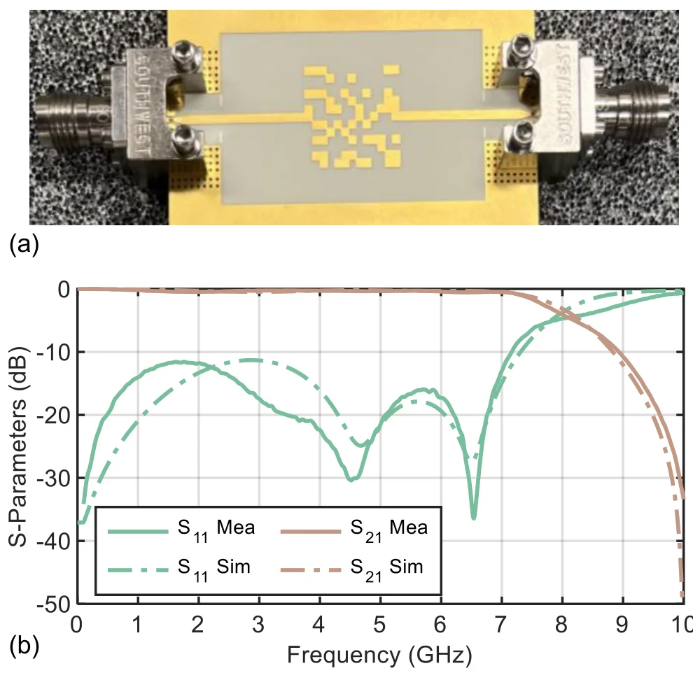
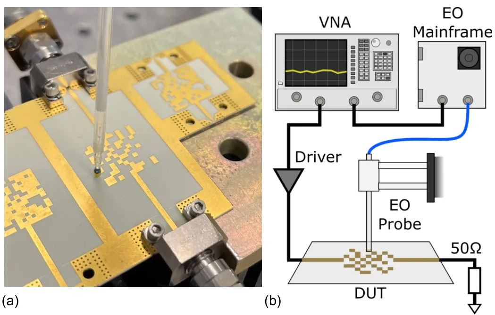
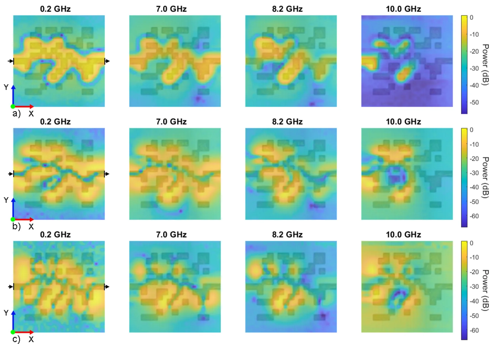

基于深度学习的像素化微波滤波器设计及电光电场测量表征Deep-Learning-Based Pixelated Microwave Filter Design and Characterization using Electro-Optical Electric-Field Measurements
主题是微波滤波器硬件设计，与定位/建图主线关系极弱；作为采集关键词噪声处理即可。
一句话工作总结
该工作用 CNN 与遗传算法自动综合像素化微波滤波器，并通过 S 参数和电光电场测量验证设计。
摘要
传统微波滤波器设计通常依赖迭代参数调节和预定义拓扑，限制设计空间并增加开发时间。本文使用结合卷积神经网络和 genetic algorithms 的深度学习方法，自动综合像素化微波滤波器。为实验验证该方法，作者分析了 S 参数和空间电场测量；综合得到的低通滤波器在仿真与测量之间吻合良好，实现 7 GHz 通带并在 9.5 GHz 之后有超过 20 dB 抑制。首次使用电光测量揭示了类似耦合传输线或 stub 结构的电场模式，从而解释 AI 生成设计的 emergent characteristics。
Traditional microwave filter design typically relies on iterative parameter tuning and predefined topologies, which limits design space and increases development time. This study uses a deep learning approach combining convolutional neural networks with genetic algorithms to automate pixelated microwave filter synthesis. To validate the approach experimentally, both S-parameter and spatial electric-field measurements were analyzed. The synthesized low-pass filter demonstrated excellent agreement between simulated and measured performance, achieving a 7 GHz passband with over 20 dB suppression beyond 9.5 GHz. Electro-optical measurements, for the first time, revealed electric field patterns that resemble coupled transmission-lines or stub structures, providing insight into the emergent characteristics of AI-generated designs.
中文解读摘录
- 链接：abs / PDF；作者：Han Zhou, Richard Bannister, Caspar Pierce, Haojie Chang, David Widen, Ludvig Fornstedt, Gabriel Melin, Alexander Bohlin, Pontus Lindeberg Fredriksson, Dilbagh Singh, Christian Fager, Koen Buisman；类别：eess.SP, cs.AI, cs.AR, cs.SY, eess.SY；采集 score=6。
- 核心思路：把 CNN 与 genetic algorithms 用于 pixelated microwave filter 自动综合，并用 S-parameter 与 electro-optical electric-field measurements 验证 AI 生成结构。
- 与用户方向的关系：与 SLAM/GNSS 定位算法几乎无直接关系；可视为“深度学习辅助 RF 结构设计”的噪声候选。
- 关注点：不建议占用主线阅读时间；若后续关注 RF sensing/无线数字孪生硬件，可再回看。
图表/页面预览

{kind=link}

{kind=link}

{kind=link}
